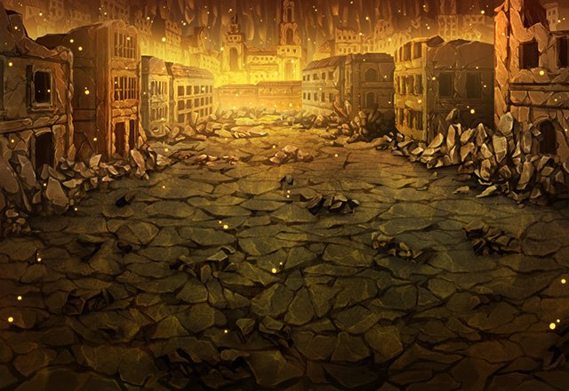

アーク
ここは、かつてイシュグリア全体を 支配しようとした魔神が
アーク
その魔神が失脚した後、他の魔神や 魔獣によって滅ぼされたと聞いたが
アーク
その前の街は異界の街のようだが あちらはおそらくカルナ・マスタが
アーク
この地に封印された影響で 現れたものだろう。
アーク
どちらにしろ、カルナ・マスタの存在は この地に様々な被害を出している。
アーク
俺たちは自分たちの世界を守るため 多くの被害を与えてしまったんだ。
アーク
この地の住人からすれば、カルナ・マスタの 封印に一役買った俺は
？？？
ええ、そうですね。 本当に邪魔な存在です……。
モーラ
折角、故郷に戻ったというのに騒がしくて ゆっくり休養もできません。
アーク
何をしにきた？ 邪魔をするつもりなら……。
モーラ
これだから頭の固い男は嫌いなんです。 邪魔などするつもりはありません。
モーラ
むしろ早く出て行っていただくために 助言をしに来たのです。
モーラ
あなたはどうせ眠っているカルナ・マスタの 真の力と魂を解放するつもりなのでしょう？
モーラ
でしたら、この先の浮遊城ミルドランに 向かいなさい。
モーラ
浮遊城ミルドランが、あなたたちを カルナ・マスタが封じられた地、
モーラ
私が知っているのは カルナ・マスタの場所だけ。
モーラ
もし、あなたたちがこの地を荒らすのなら その時は私は再び敵となります。
モーラ
せいぜいカルナ・マスタの討伐に 失敗しないことですね……。
モーラ
…………。 セリアといいこれだからあなたたちは……。
モーラ
Shou-chan、 あなたは本当に面倒な人ですね……。
ティリス
うん、私たちのために わざわざ来てくれたんだろうね。
アーク
Shou-chan、お前の行動は 俺だけでなく魔神をも動かしたのだな。
アーク
次にどんな敵が現れても 俺は立ち止まりはしない！